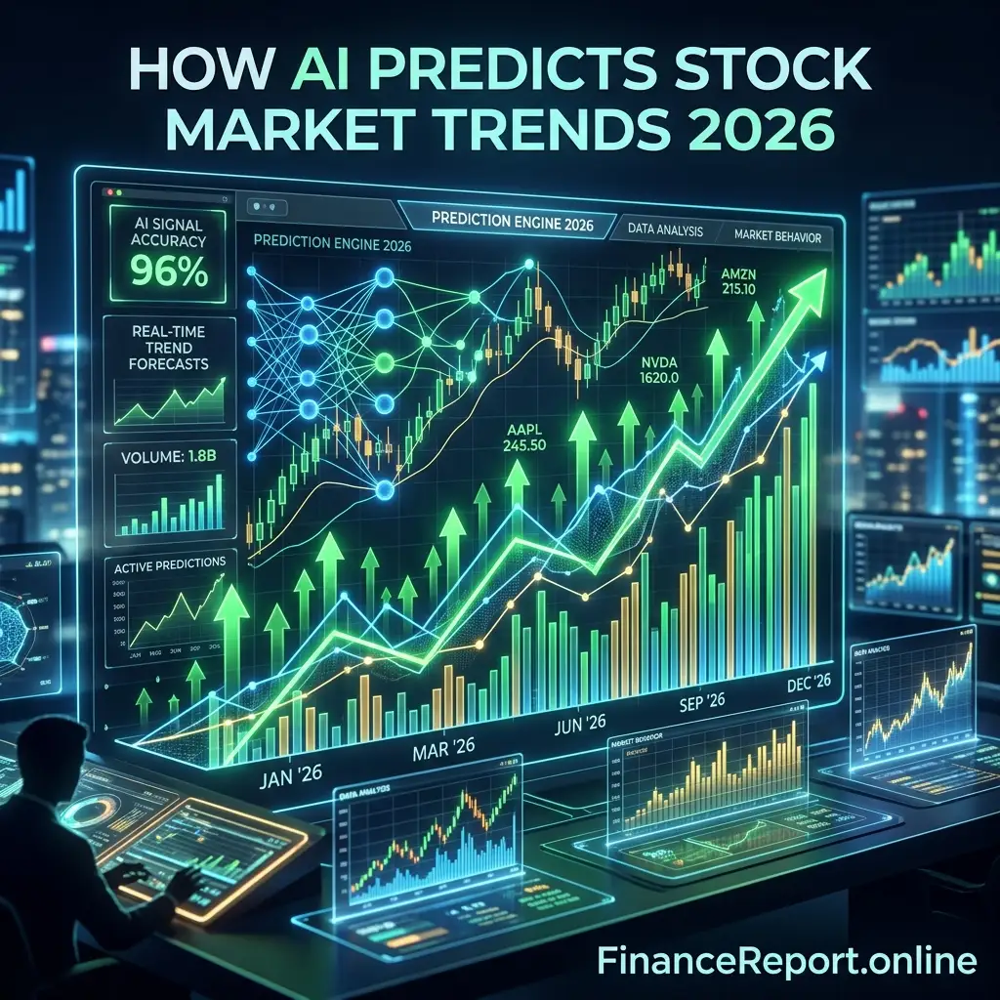

Euphoria Season 3 Premiere: Date & How to Watch
Get the 'Euphoria' Season 3 premiere details, release date, and full episode schedule. Learn how to watch Zendaya return to HBO Max in April 2026.
[Read more]
Are you looking to multiply your investment portfolio? The landscape of algorithmic trading has completely shifted, and understanding exactly How AI predicts stock market trends 2026 is no longer just for Wall Street institutions—it's for everyday retail investors. Leveraging the power of neural networks and predictive machine learning is the definitive strategy to Earn more money with AI predicts stock market trends 2026.
But how does it actually work? Modern AI tools rapidly ingest millions of data points, from historical price charts and macroeconomic indicators to live news sentiment analysis. By processing natural language from financial reports and recognizing fractal patterns in global charts within milliseconds, AI removes human emotion from trading to deliver highly accurate, actionable forecasting.
The practical application of these algorithms is staggering. One major use case is Sentiment Analysis Automation. AI can instantly 'read' thousands of tweets and quarterly earnings reports to gauge market fear or greed, giving investors a heads-up before the main market reacts. Another powerful use case is Pattern Recognition where machine learning identifies elusive technical patterns—like inverse head-and-shoulders across diverse timeframes—much faster and more accurately than the human eye.
To help you seamlessly integrate these technologies into your own strategy, here are the top 5 advanced AI platforms you need to use right now.
Trade Ideas remains an absolute powerhouse for intraday traders. It uses a virtual AI analyst named "Holly," which runs millions of technical trading scenarios overnight to present the highest probability trades before the morning bell.
Link: Trade Ideas Official Site
⭐🔥 Sponsored Recommended: Bonus link
TrendSpider is unparalleled when it comes to visual pattern recognition. The software automatically draws precise trendlines, identifies Fibonacci levels, and executes smart trading bots without writing any code, maximizing your time and accuracy.
Link: TrendSpider Official Site
⭐🔥 Sponsored Recommended: Bonus link
Tickeron combines human intelligence with AI to offer unique pre-calculated trading bots covering forex, crypto, and traditional stocks. It features comprehensive AI Pattern Search engines designed strictly to help retail investors earn more money predicting breakouts.
Link: Tickeron Official Site
⭐🔥 Sponsored Recommended: Bonus link
If you prefer deep portfolio analytics over day-trading, Kavout is a must-have. Its proprietary 'K Score' ranks stocks daily using millions of multi-dimensional data points, offering investors a uniquely clear compass for longer structural market plays.
Link: Kavout Official Site
⭐🔥 Sponsored Recommended: Bonus link
StockHero lowers the barrier to entry by providing robust algorithm backtesting. With an incredibly intuitive interface accessible on your smartphone, it allows fresh investors to easily deploy and test AI bots, generating more passive returns over the 2026 financial climate.
Link: StockHero Official Site
⭐🔥 Sponsored Recommended: Bonus link
Embracing the reality of How AI predicts stock market trends 2026 means adapting your financial toolbox to the modern era. When you pair disciplined investing principles with leading technology engines, the phrase "Earn more money with AI predicts stock market trends 2026" seamlessly transitions from an ambitious dream to absolute reality.
Check out this URL to watch multiple videos from various social media platforms in one place: Click here

Get the 'Euphoria' Season 3 premiere details, release date, and full episode schedule. Learn how to watch Zendaya return to HBO Max in April 2026.
[Read more]
A massive fire at the Viva Energy oil refinery in Geelong was extinguished after 12 hours. Discover the cause and the potential impact on Australian petrol prices amid a global fuel crunch.
[Read more]
Rory McIlroy captures his career Grand Slam winning the 2026 Masters. He beat Scheffler by one shot to claim the $4.5M prize at Augusta National.
[Read more]
In a historic shift, Peter Magyar's Tisza Party wins the 2026 Hungarian elections, ending Viktor Orbán's 16-year era.
[Read more]
Barcelona crash out of the UEFA Champions League 2026 quarter-finals as Atletico Madrid advance 3-2 on aggregate. Lamine Yamal and Ferran Torres shone but Eric Garcia's red card sealed Barca's fate.
[Read more]